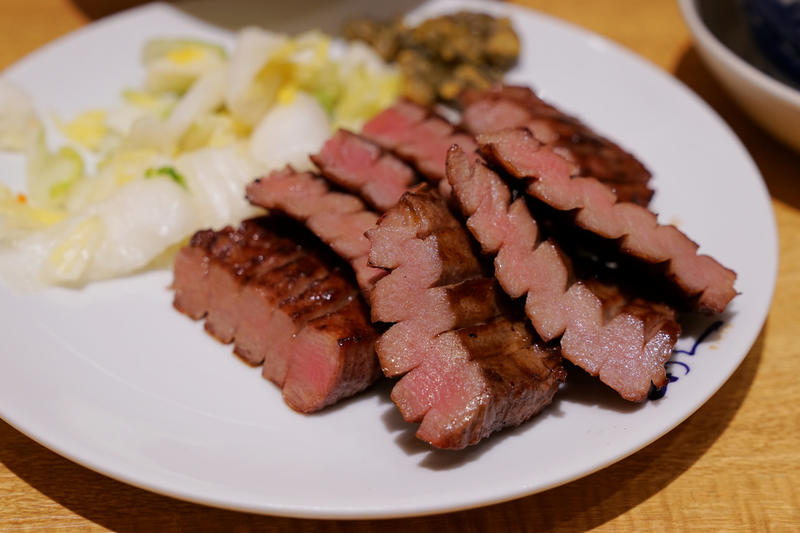

Slow Cooker Lengua (Beef Tongue)

Beef tongue is a very tender, tasty meat. Don't let the cut of meat scare you; you will be pleasantly surprised. Find the meat at any Mexican market — ask the butcher. Serve this in tacos with chopped onion, tomato, cilantro, and wedges of lime.
Ingredients
- 1 beef tongue
- ½ onion
- 2 cloves garlic, or more to taste
- 1 bay leaf
- salt and ground black pepper to taste
- 1 tablespoon butter
Directions
- Place beef tongue, onion, garlic, and bay leaf in a slow cooker; generously season with salt. Pour in enough water to cover beef mixture.
- Cook on Low for 8 hours.
- Transfer beef tongue to a work surface and cool slightly. Peel outer layer of skin from beef tongue and remove rough end.
- Chop meat into bite-sized pieces.
- Heat butter in a skillet over medium heat; cook and stir chopped meat until tender, 5 to 10 minutes. Season with salt and pepper.